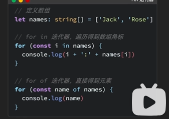
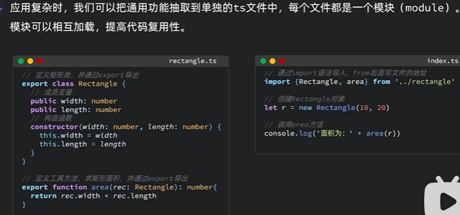
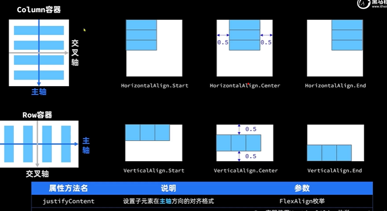

ArkTS
数据类型
条件语句
拓展：for in与for of的使用
- for in ：遍历得到数组的角标，
- for of ：直接得到元素。 
函数
使用function关键字声明函数，
function outname(name:string):void{
console.log('你好'+name+"!")
}
//第二种写法：
let outname = (name:string)=>{
console.log('你好'+name+"!")
}
outname('lucy')ts还提供了一种可传参数和不传参数也执行的函数的操作，写法如下：
let outname = (name:string='张三')=>{
console.log('你好'+name+"!")
}
outname()面向对象
模块的导入导出
提高代码的重复使用 
组件的使用
image组件
textinput组件
TextInput({text:this.imagewidth.toFixed(0)})
.width(150)
.backgroundColor('#36D00A')
.type(InputType.Number)
.onChange( values =>{
this.imagewidth = parseInt(values)
})
TextInput({placeholder:'nihao'})
.width(150)
.backgroundColor('#4399')文本框内输入的值是什么类型的数据呢？
从上面的代码可知是字符型的，此处我们用parseInt将一个变量转换成number类型，又用方法.toFixed()将一个number类型的变量转换成字符串型。
按键组件
滑动条组件（slider）
页面布局
线性布局
Row布局与Column布局类似，只是主轴方向不同 
循环控制ForEach
使用router进行页面跳转时用replaceUrl与pushUrl的区别
后者会保留前一页信息，就是跳转后会返回上一页面，而后面的不会跳回上一页
11–t
f–!=11,运行时